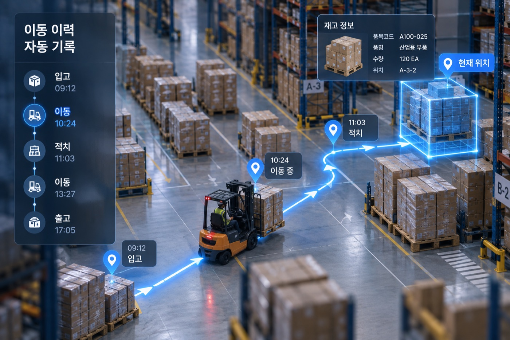
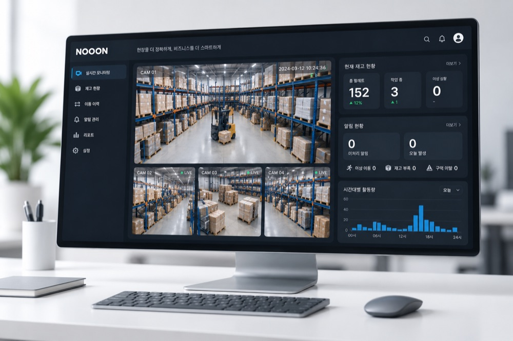

24~48시간의 실제 현장 영상과 현재 재고 · 생산 · 출하계획을 기반으로,
이 현장에 맞는 방식을 선택해 Nooon이 무엇을 읽고 무엇을 예측할 수 있는지 확인하십니다.
비용은 발생하지 않으며, 결과 확인 후 도입 여부는 자유롭게 결정하실 수 있습니다.
지금 이 순간에도 창고 안에서는 파렛트가 움직이고 있습니다.
누가 무엇을 어디로 옮겼는지, 그 대부분은 기록되지 않습니다.
그래서 내일 A Zone이 꽉 차는지, 모레 오후에 작업이 몰리는지는 닥쳐봐야 압니다.
그래서 순서를 바꿔 봅니다. 이틀의 영상과 사흘의 계획이면 충분합니다.
Nooon이 그 안에서 재고의 이동을 읽어내거나, 아직 오지 않은 시간을 돌려봅니다.
대상 구역을 촬영하고, 보유하고 계신 재고·위치 정보와 생산·출하계획을 함께 받습니다.
현장을 확인한 뒤 적합한 방식을 선택해, 실제 인식 검증 또는 운영 Simulation을 진행합니다.
귀사 현장에서 나온 결과입니다. 다른 창고의 예시 자료가 아닙니다.
하나는 지금 현장에서 실제로 일어난 일을 읽는 것,
다른 하나는 아직 오지 않은 시간을 돌려보는 것입니다.
촬영된 영상에서 Nooon이 무엇을 어떻게 인식하는지, 귀사 화면으로 확인하십니다.
현재 재고와 위치로 창고를 재현한 뒤, 생산 · 입고 · 출하계획을 적용해 앞으로의 운영을 돌려봅니다.
기본 72시간이며, 제공해 주시는 계획 자료의 범위에 따라 최대 30일까지 확장 가능합니다.
여기까지가 실제로 있었던 일입니다.
그리고 이제, 아직 오지 않은 72시간입니다.
위 수치는 이해를 돕기 위한 SAMPLE이며, 실제 결과는 귀사 현장 데이터와 계획 자료를 기준으로 산출됩니다.
시뮬레이션 구간은 기본 72시간이며, 계획 자료의 범위에 따라 최대 30일까지 확장 가능합니다.
위 항목은 Nooon 상시 운영 시 제공되는 분석의 일부이며, 체험 단계에서는 확보된 데이터 범위 안에서 Preview로 제공됩니다.
이틀의 촬영으로 창고 전체를 다 안다고 말하지 않습니다.
어디까지가 실제로 관측된 내용이고, 어디부터가 계산된 예상인지 결과물에 표시합니다.
24~48시간의 실제 영상에서 확인된 내용입니다.
제공해 주신 재고 · 계획 · 운영 Rule을 기반으로 계산된 예상 결과입니다.
Nooon을 장기 운영할 경우 제공 가능한 분석의 Preview입니다.
이 사흘을 보기 위해 별도의 시스템 개발이나 데이터 가공은 필요하지 않습니다.
현장 운영도 멈추지 않습니다.
체험이 끝나면 귀사 현장에서 나온 결과가 남습니다. 다른 현장의 예시 자료가 아닙니다.
실제 작업 영상 위에서 재고 · 사람 · 지게차가 어떻게 인식되고, 이동이 어떻게 기록되는지 확인합니다.
현재 재고와 생산 · 출하계획, 운영 Rule을 기반으로 앞으로의 창고 운영을 돌려본 결과입니다.

재고 · 공간 · 이동 · 작업량 · Risk에 대한 분석을 Preview 형태로 정리해 드립니다.

신청해 주시면 담당자가 연락드려 대상 구역과 일정을 협의합니다.
AI Vision이 재고와 움직임을 인식합니다.
입고 · 이동 · 적치 · 출고가 자동으로 기록됩니다.
축적된 데이터를 통해 공간 · 동선 · 재고 · 운영을 분석합니다.
아래 항목을 남겨 주시면 담당자가 연락드립니다.
세 가지입니다. 귀사 현장 영상에서 Nooon이 실제로 인식한 내용(Reality Replay), 현재 재고와 계획을 기반으로 앞으로의 창고 운영을 돌려본 결과(Warehouse Simulation), 그리고 Nooon을 상시 운영할 때 얻게 되는 분석의 Preview(Intelligence Preview)입니다. 모두 귀사 현장 데이터로 만들어집니다. 다만 세 가지를 어느 깊이까지 제공할 수 있는지는 현장 구조와 보유 자료에 따라 달라지며, 현장 확인 단계에서 범위를 먼저 협의드립니다.
아닙니다. 실제 인식(ACTUAL)과 Simulation 중 이 현장에 적합한 방식을 선택해 진행합니다. 창고 구조, 적치 방식, 사각지대, 보유하고 계신 자료를 먼저 확인한 뒤 어느 방식으로 진행할지 Nooon Team이 판단해 협의드립니다.
기본은 72시간입니다. 제공해 주시는 생산·입고·출하계획의 범위에 따라 최대 30일까지 확장할 수 있습니다. 다만 기간이 길어질수록 계획 자료의 정확도가 결과에 크게 영향을 미칩니다.
필요하지 않습니다. 24~48시간 동안 현장은 평소대로 운영하시면 되며, 작업 방식을 변경하실 필요가 없습니다. 별도의 시스템 개발이나 PDA 도입도 필요하지 않습니다.
가능합니다. 보유하고 계신 수준에서 시작하며, 부족한 부분은 Nooon Team이 함께 구성합니다. 자료 정리를 위해 신청을 미루실 필요는 없습니다.
결과물에는 실제 영상에서 관측된 내용(ACTUAL)과 제공해 주신 자료로 계산된 예상(SIMULATION)을 구분해 표시합니다. 이틀의 촬영으로 창고 전체를 판단할 수는 없으며, 어디까지가 관측이고 어디부터가 예측인지 명확히 구분해 설명드립니다.
제3자 제공 및 외부 반출을 하지 않습니다. 홍보·영업 자료에 사용하는 경우에도 사전 서면 동의를 받습니다. 저장 위치와 폐기 시점은 신청 접수 시 문서로 안내합니다.
아닙니다. 도입 여부를 판단하기 위한 절차이며, 결과 확인 후 진행하지 않으셔도 됩니다. 체험 단계에서 발생하는 비용도 없습니다.